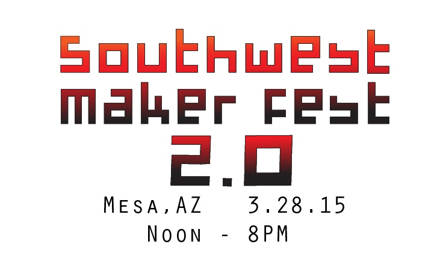

3rd Annual B.E.S.T. Robotics Summer Camp
6/9/15 - 6/11/15
This Leadership Experience is for students 10 and older where they learn how to problem solve and work
with others in addition to building and competing with a robot. We offer a full 18 hours of instruction and
immersion on STEM topics in addition to public speaking, business management and teamwork that will
change a students life! With small student to instructor ratios our program is developed and supervised by
an award winning coach who cares deeply about challenging students to BeGreaterThanAverage and do
hard things as they pursue knowledge through fun! Other camp staff include trained students from Cave
Creek Robotics and R4Robotics, two of the nation’s top high school robotics teams.
View Flyer
Bay Area Maker Faire

Southwest Maker Fest

Beginning Mindstorms (Ages 7-10)
9/4/14 - 12/11/14
Beginning Mindstorms teaches students about robotics and engineering using
the Lego Mindstorms and the Lego Technic building system.
Advanced Mindstorms (Ages 11+)
9/4/14 - 12/11/14
Advanced Mindstorms teaches students about robotics and a variety of skills
related to the field of robotics. Whether you own it, have used it, or have
never even heard of it, we will take the Lego Mindstorms Robotics System far beyond
the basics. In addition to robot design, students will learn about 3D design, advanced programming,
and how to make custom sensors.
MASTERs Conference 2014
8/20/14
We demonstrated our VRC Toss Up robot, The Toucan,
at the 2014 MASTERs Conference in Phoenix, Arizona.
For more info, visit: http://techtrain.microchip.com/masters/?redirects=masters
BEST Robotics Summer Camp
8/4/14 - 8/6/14
We co-hosted a BEST robotics summer camp with R4 Robotics of New Mexico.
The 3 day camp wass an introduction to robotics using supplies that one might find
in their own garage. Participants utilized the Engineering Design Process as they
built a robot with other teammates. The robot was then used to participate in
a competition at the end of the camp. In addition, students wrote an engineering
manual, learned a variety of basic tool skills and were exposed to a variety of
important engineering technologies.
View Flyer
Lego Engineering (Ages 7-10)
1/23/14 - 5/1/14
Lego Engineering teaches students structural and mechanical engineering
principles using Legos and the Lego Technic building system.
Mindstorms and Beyond (Ages 10+)
1/23/14 - 5/1/14
Mindstorms and Beyond teaches students about robotics and a variety of skills
related to the field of robotics. Whether you own it, have used it, or have
never even heard of it, we will take the Lego Mindstorms Robotics System far beyond
the basics.
SCITECH Festival
2/12/14
We demoed our VRC Toss Up robots, The Toucan and The Warthog,
at the SCITECH Festival at Sonoran Trails Middle School.
2013 MASTERs Conference
8/21/13 - 8/24/13
We demoed our VRC Sack Attack robot, The Pelican,
at the 2013 MASTERs Conference in Phoenix, Arizona.
For more info, visit: secure.microchip.com/usmasters/Home
BEST Robotics Summer Camp
7/24/13 - 7/26/13
We co-hosted a BEST robotics summer camp with R4 Robotics of New Mexico.
The 3 day camp was an introduction to robotics using supplies that one might find
in their own garage. Participants utilized the Engineering Design Process as they
built a robot with other teammates. The robot was then used to participate in
a competition at the end of the camp. In addition, students wrote an engineering
manual, learned a variety of basic tool skills and were exposed to a variety of
important engineering technologies.
Lego Mindstorms Summer Camp
6/17/13 - 6/20/13
Team Automata assisted in running a Lego Mindstorms summer camp at Heritage Elementary School.